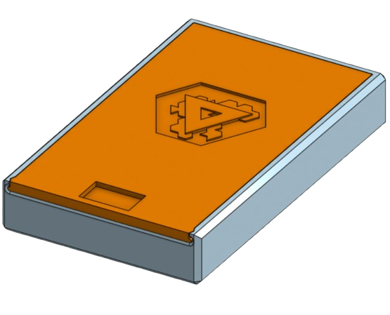
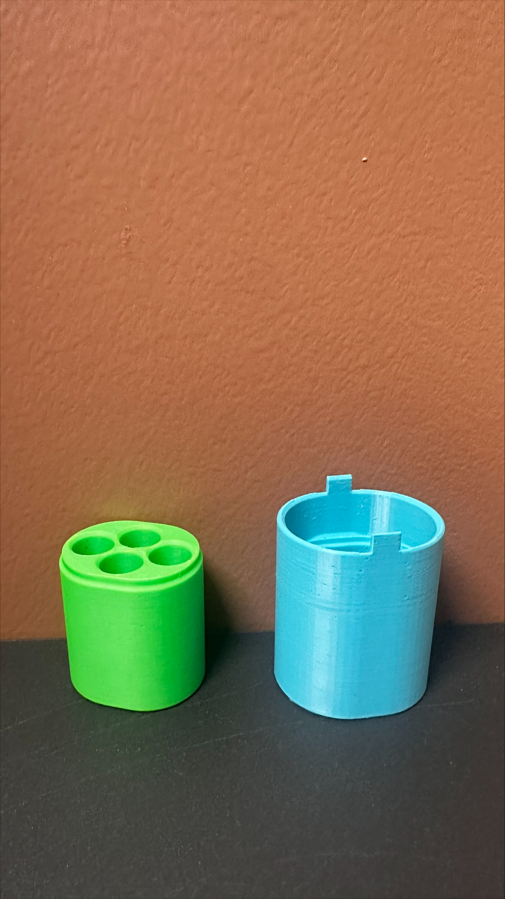
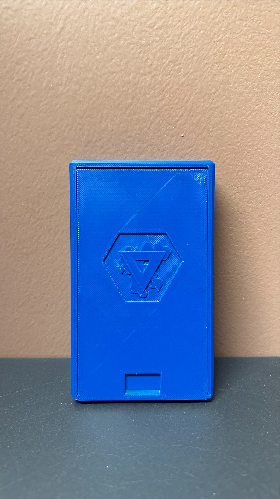
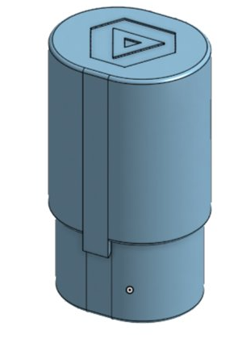
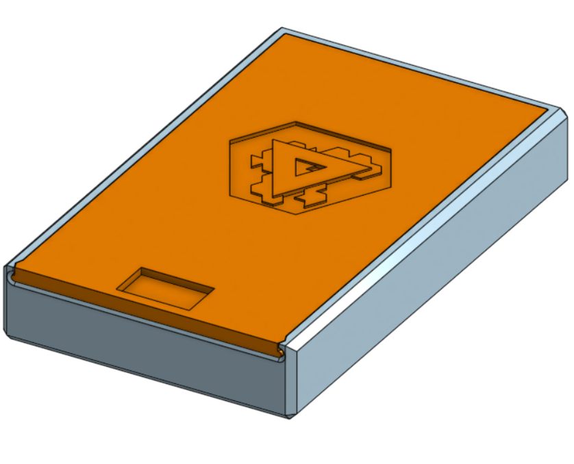
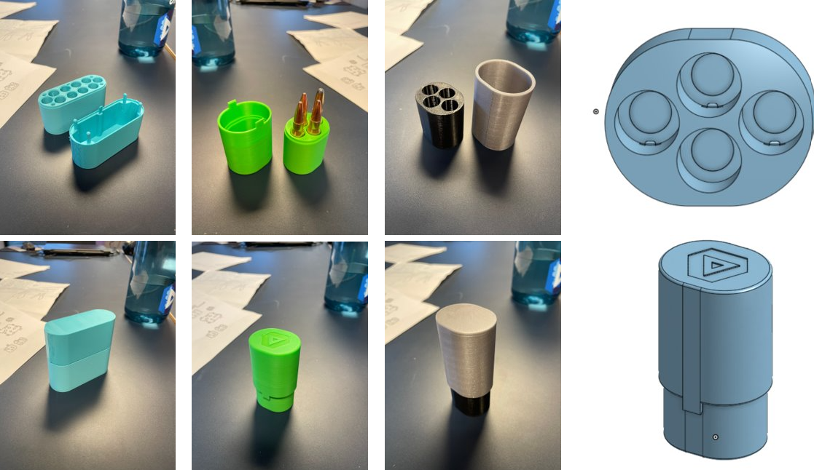
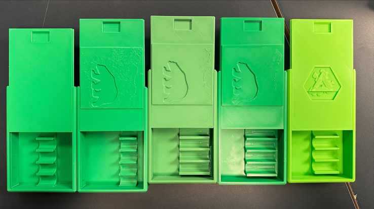

Ammunisjonsboks-prosjekt
Intro
I dette prosjektet var målet å lage en ammunisjonsboks ved bruk av 3d-printing. Målet var et brukbart sluttresultatet som de på skolen kunne ta nytte av. Vi startet med en brainstorming av ideer og presenterte de deretter til "kundene" våre. Deretter valgte vi ideene som viste seg til å være best og lagde prototyper av de. For hver prototype vi lagde sørget vi for å få masse tilbakemelding fra kundene slik at vi kunne lage en forbedret modell. Etter noen iterasjoner av dette fikk vi et resultat vi var fornøyd med.
Gruppe 1

Sejer, Ane, Håvard, Jonatan
Gruppe 2

Erik, Kevin, Sverre, Magnus
Etter vi hadde spurt rundt og kommet med flere ideer, valgte vi en boks med et skyvelokkdesign. Vi prøvde oss fram med forskjellige toleranser og testet boksen blant annet med en fryse-test og en slippe i bakken test.
“Dette er 10/10”, Sondre C M Juul
Brainstorming og idegenerering
Deler opp i grupper og begynner å brainstorme idder samt spørre kundene våre om problemer med ammunisjonsboksene.
3D-modellering og prototyper
Begytnte å lage prototyper av ideene vi hadde kommet med og testet dem og spurte rundt om hva vi kunne gjøre bedre.
Iterasjoner og forbedringer
Iterasjoner av prototyperne og forbedringer av dem basert på tilbakemelding fra kundene våre.
Testing og logo
Tester prototyperne og lager en logo til boksen.
Småtweaking
Småtweaking på modeller og materialer for å få det beste resultatet. Tweaker tolleranser og gjør mindre forbredninger.
Bilder





